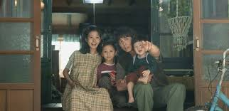

Los personajes son el corazón del dorama:
Protagonista femenina: optimista y resiliente.
Protagonista masculino: reservado, pero protector.
Amiga cercana: divertida y leal.
Rival: genera tensión dramática.
| Personaje | Rol | Características |
|---|---|---|
| Protagonista femenina | Principal | Optimista, valiente |
| Protagonista masculino | Principal | Reservado, protector |
| Amiga cercana | Secundaria | Divertida, leal |
| Rival | Antagonista | Ambicioso, conflictivo |
